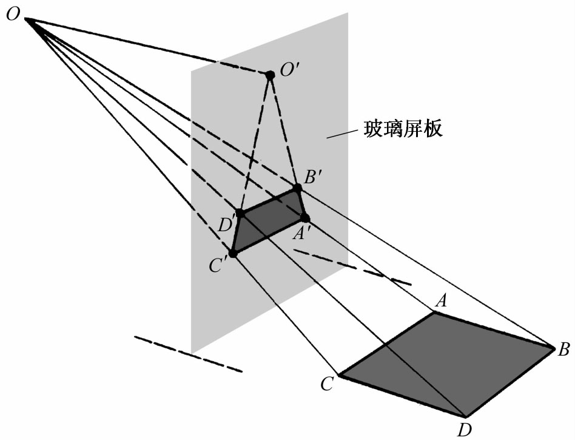
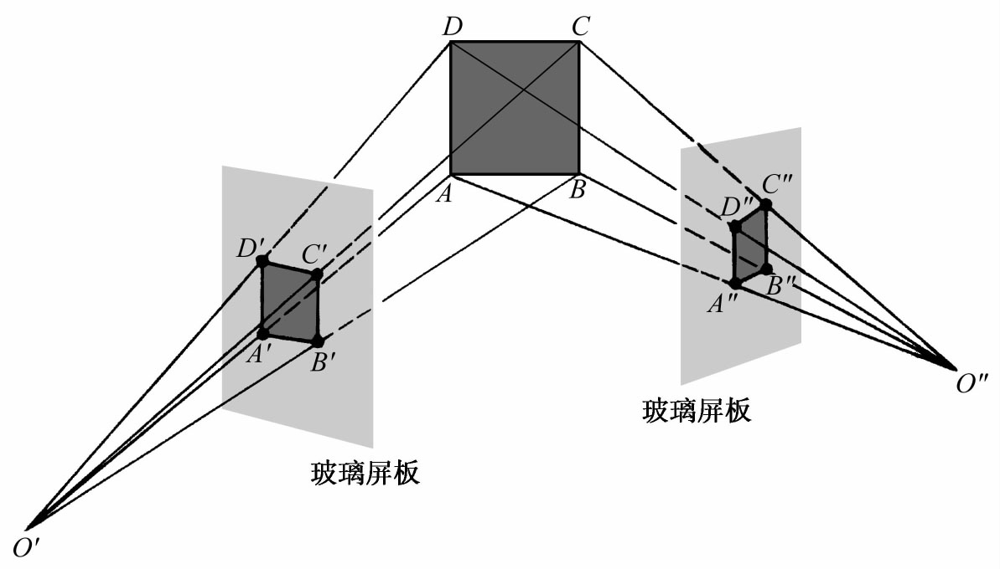

2．透视法工作中所提出的问题
画家们所搞出来的聚焦透视法体系，它的基本思想是投影和截面取景原理（第12章第1节）。人眼被当作一个点，由此出发来观察实景。从实景上各点出发，通往人眼的光线形成一个投射锥。根据这一体系，画面本身必含有投射锥中的一个截景，从数学上讲，这截景就是一个平面与投射棱锥相截的一部分截面。
现设人眼在O处（图14.1）观察水平面上的一个矩形ABCD。从O到矩形四边上各点的连线便形成一投射棱锥，其中OA，OB，OC及OD是四根典型直线。若在人眼和矩形间插入一平面，则投射锥上诸直线将穿过那个平面，并在其上勾画出四边形A′B′C′D′。由于截面（截景）A′B′C′D′对人眼产生的视觉印象和原矩形一样，所以人们自然要问（正如艾伯蒂所提出的那样）：截景和原矩形有什么共同的几何性质？从直观上看，原形和截景既不重合又非相似，它们也不会有相同的面积。事实上截景未必是个矩形。

图14.1
这问题的一个推广是：设有两个不同的平面以任意角度与这同一个投射锥相截得到两个不同的截景，它们有什么共同的性质？
这问题还可进一步推广。设矩形ABCD是从两个不同的点O′及O″来观察（图14.2）。于是就有两个投射锥，一个由O′及矩形确定，第二个由O″及矩形确定。若在每个投射锥里各取一截景，则由于每一截景应与矩形有某些共同的几何性质，则此两截景也应有某些共同的几何性质。

图14.2
17世纪的一些几何学者就开始找这些问题的答案。他们把所获得的方法和结果看成是欧几里得几何的一部分。然而，这些方法和结果诚然大大丰富了欧几里得几何的内容，但其本身却是几何一个新分支的开端，这个分支到了19世纪就被人称为射影几何。本章中我们就把这项工作称作射影几何，尽管在17世纪，人们并不对欧几里得几何与射影几何加以区分。